Lindholm Høje
Begräbnisplatz und Siedlung


Google Earth - Ansicht (30.08.21)


26 - Lindholm Høje - Letztes Update 09.04.2025
| Navidaten: 57.07825 9.91007 oder: Vendilavej 11, 9400 Nørresundby |
Aktuelle Infos zum Museum vor Ort - Öffnungszeiten / Eintrittspreise / usw. - finden sich hier.
Im Rahmen meiner 2022er Jütland Wikingertour war ich am Donnerstag, 02.06.2022, mal wieder in Lindholm Høje. Das Museum habe ich leider auslassen müssen und konnte bei unschönem Wetter nur über das weitläufige Areal streifen. Dabei habe ich diese Fotos gemacht.
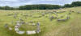 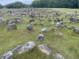 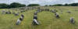 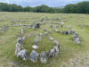 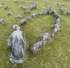 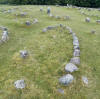 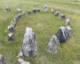 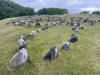 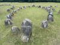 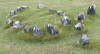 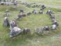


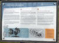 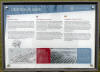 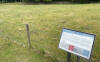 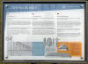 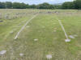


Einige Fotos habe ich mit dem iPhone 12 Pro am ausgefahrenen Selfiestick von oben gemacht. Die Fotos mit meiner Canon EOS 70D sind dagegen nahezu alle unbrauchbar, die hatte vorher schon Probleme mit dem Einstellrad. :-(
In meinen Unterlagen konnte ich recherchieren, dass ich zuvor bereits fünfmal auf Lindholm Høje war - Dienstag, 02.08.1988 / Samstag, 17.08.1991 / Montag 27.06.1994 - erstmals im neuen Museum / Samstag, 01.07.2000 und am Freitag 23.08.2013.
11.12.2021 - Dieses Luftfoto ist von der Webseite "Skråfoto" - gehört zum "Klimadatastyrelsen" - Aufnahmedatum 19.04.2021 (Download 11.12.2021) - Lizenz: CC BY 4.0
Über diese Webseite wird nach Eingabe der Anschrift die Örtlichkeit mit mehreren Aufnahmen aus den vier Himmelsrichtungen plus einer Senkrechtaufnahme wiedergegeben - Luftfoto von mir beschnitten auf "Lindholm Høje" siehe hier:
Inzwischen sind neue Aufnahmen vom 18.04.2023 verfügbar. Die Luftaufnahmen werden auch zukünftig - seit 2017 - alle zwei Jahre erneuert.
31.08.2021 - Inzwischen kann man via "Google StreetView" von zu Hause aus am PC durch das Gelände von Lindholm Høje spazieren und sich alles in Ruhe anschauen.
Lindholm Høje gehört zu den bedeutendsten Denkmälern aus dem letzten Abschnitt der vorgeschichtlichen Zeit Dänemarks. Außerordentlich eindrucksvoll ist das Gräberfeld mit fast 700 Gräbern, von den die meisten mit dreieckigen, ovalen oder schiffsförmigen Steinsetzungen markiert sind.
Der Bezirksarzt Møller aus Nørresundby bat das Nationalmuseum in einem Brief vom 13.06.1889 im Namen der Witwe Lange, die Steinkreise zu untersuchen, die sich auf Frau Langes Feld auf Lindholm Høje befanden. Kristian Bahnson (Bahne Christian Bahnson - *12.05.1855 - 10.01.1897, Ethnograf - link-LIVES - Politiets registerblade - Bestattungsprotokoll)
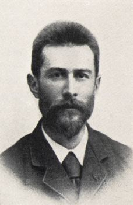
nahm deshalb eine erste Ausgrabung vor und fand dabei zwei schiffsförmige Steinsetzungen und einen Steinkreis. Die Amateurarchäologin und Tanzlehrerin Augusta Zangenberg (*10.10.1846 - 08.12.1915 - link-LIVES)
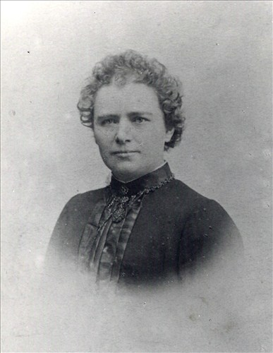
Bildquelle: Wikipedia - Lizenz: Public Domainsuchte dann 1896 das Gelände mit einer Stahlstange ab. Mit dieser Methode stieß sie durch die Flugsandschicht auf mehrere Steine. Durch ihre Ausgrabungen wurden einzelne Steinsetzungen zutage gefördert. Die vorgeschichtlichen Gegenstände, die sie fand, schickte sie an das Nationalmuseum und bat gleichzeitig eindringlich um eine archäologische Untersuchung des Hügelgebietes (Die Sandschicht über den Steinen, auf die ich mit meinem Suchgerät einer dünnen Stahlstange stieß, ist hier ca. 4 Fuß dick. - Zitat aus diesem Brief).
Zu dieser Zeit konnte man sich jedoch nicht für eine Untersuchung des Areals durchringen. Die aufgedeckten Steine wurden kurz danach entfernt, um zerschlagen als Wegmaterial genutzt zu werden.
1898 wurde dann in der Aalborg Stiftszeitung Lindholm Høje ein Stück Land mit zahlreichen und seltenen Altertumsdenkmälern zum Verkauf angeboten. Glücklicherweise wurde das Areal vom dänisch-argentinischen Plantagenbesitzer A.F. Lassen erworben, der damit die weitere Zerstörung der dort befindlichen vorgeschichtlichen Denkmale verhindern wollte. 1901 übergab er Lindholm Høje an die Nørresundby Kommune unter der Bedingung, dass das Gebiet der Öffentlichkeit frei zugänglich sein und eine eventuelle archäologische Untersuchung vom Nationalmuseum geleitet werden sollte.
1937 versuchte der damalige Direktor des Aalborg Historiske Museum, Peter Riismøller (*14.03.1905 28.11.1973, Archäologe - link-LIVES)
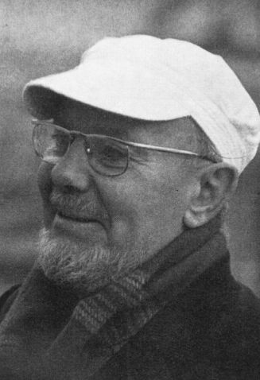
Bildquelle: Fotografie um 1970 - KUML 1969 - Lizenz: CC-BY-SAvergeblich, dass eine Untersuchung auf Lindholm Høje durchgeführt wird.
1951 untersuchte Oscar Marseen (*23.08.1915 - ?, Archäologe), später Inspektor des Aalborg Historiske Museum, die Hügel mit einer Stahlsonde. Hierbei gewann er zum erstenmal den Eindruck von der Vielzahl der Gräber unter der Sandschicht. Anlass zur Untersuchung gaben Beobachtungen von vielen Steinen und Brandgräbern, die in Laufgräben gemacht wurden, welche deutsche Besatzungstruppen während des 2. Weltkriegs im Gelände angelegt hatten.
In den Jahren 1952-58 fand endlich eine großangelegte Ausgrabung des Hügelgebietes Lindholm Høje unter der Leitung von Thorkild Louison Ramskou (*25.07.1915 - 25.04.1985, Archäologe) vom Nationalmuseum in Kopenhagen in Zusammenarbeit mit dem Aalborg Historiske Museum statt. Die vorgeschichtlichen Funde wurden dann auch diesem Museum übergeben.
1989 feierte die Zementfabrik Aalborg Portland ihr 100-jähriges Jubiläum und stiftete der Gemeinde Aalborg ein neues Museumsgebäude auf Lindholm Høje. 1992 konnte dann die Ausstellung im neuen Museum eröffnet werden.
Lindholm Høje, eine große Moräne, wurde am Ende der Wikingerzeit von einer bis 4 m hohen Flugsandschicht bedeckt und schützte dadurch jahrhundertelang die vorgeschichtlichen Denkmäler. Um den Sand während der Ausgrabung abtransportieren zu können, wurde extra eine Feldbahn gebaut. Man ging aber trotzdem behutsam zu Werke und entfernte den Sand vorsichtig mit Handschaufeln. Bisweilen wurde der Sand gesiebt, damit auch ganz kleine Fundstücke nicht übersehen wurden.
Das Gräberfeld
Etwa 700 Gräber wurden untersucht. Es sind dies meistens Brandgräber mit oder ohne Steinsetzungen, die Dreiecke, Vierecke, Kreise, Ovale und schiffsförmige Figuren bilden. Die letzteren sind die jüngsten und aus der eigentlichen Wikingerzeit, während die Dreiecke die ältesten sind.
Außerdem fand man eine geringe Anzahl von Skelettgräbern mit kreuzförmigen Fibeln des 6. Jahrhunderts.
Innerhalb einer Steinsetzung wurde nur je eine Brandbestattung vorgefunden, welche der Rest eines Scheiterhaufens ist. Im Durchmesser war sie ungefähr 1 m, und normalerweise lag diese Brandschicht in der Mitte der Steinsetzungen.
Mehr oder wenig verschmolzen wurden in einem solchen Brandgrab gefunden: Bronzeschmuck, Glasperlen, Eisenmesser, Wetzsteine, Spinnwirtel, Spielfiguren, Beschläge für Holzkästchen und Knochen von Hund, Schaf, Pferd oder Rind.
In weitem Umfang waren auch Tongefäße - die in keinem Fall auf dem Scheiterhaufen gewesen waren - in die Brandschichten niedergelegt.
Die Länge der Schiffssetzungen liegt bei maximal 8 m - von einer 23 m langen Ausnahme abgesehen. Einige der Dreiecke sind dadurch bemerkenswert, weil zwischen den drei Ecksteinen aus Granit kleine weiße Feuersteine angebracht waren. Diese hat man zweifellos anderswo gefunden, und zwar in irgendeiner Kreideablagerung, da an den Oberflächen überall eine dicke Kreidekruste haftet.
Obwohl nur wenige gut erhaltene Beigaben in den Brandschichten gefunden wurden, wäre es durchaus fehlerhaft, diese Erscheinung als Ausdruck einer armen Zeit zu deuten. Vieles ist ganz und gar verschmolzen oder völlig durch das Feuer zerstört. Unter den vorgefundenen Beigaben müssten erwähnt werden: Fragmente mehrerer Schnabelfibeln aus dem 7. Jahrhundert, eine gut erhaltene Vogelfibel aus dem 8. Jahrhundert und Fragmente schalenförmiger Schnallen etwa aus dem 9. Jahrhundert.
In einer ovalen Steinsetzung wurde - zusammen mit ca. 150 Glasperlen und einem Bronzearmband mit Stempelornamentik aus der Zeit um 800 - ein Messerstiel aus Knochen mit einer Runenritzung gefunden. Auf einer Seite stand eine zweiteilige Runeninschrift. Aufgrund der unterschiedlichen Runenformen geht man davon aus, dass sie vermutlich nicht von der gleichen Person geritzt wurden. Der erste Inschriftteil lässt sich nicht deuten, während der andere Teil davon berichtet, dass eine Person den Messerstiel poliert hat. Es ist dies der einzigste Gegenstand mit Runen, der sich auf dem ganzen Grabplatz fand.
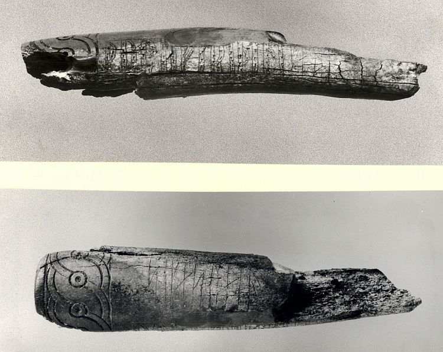
Bildquelle: Digitale Sammlung des Nationalmuseums Kopenhagen - Foto: Erik Moltke - Lizenz: CC-BY-SA
30 Skelettgräber aus dem 10. Jahrhundert - ganz oben in der Sandschicht zum Vorschein gekommen - deuten einen einsetzenden christlichen Einfluss auf die Grabsitten an, aber noch waren alle mit Beigaben ausgestattet. In einem Grab fand man - zusammen mit 2 Glasperlen - einen kleinen Thorshammer aus Bernstein, ein zweifellos heidnisches Amulett.
In einem anderen Grab wurden 5 kufische Silbermünzen gefunden. Dies sind arabische Münzen, die als kufische Münzen bezeichnet werden, da die Schrift auf den Münzen ihren Namen von der Stadt Kufah in Mesopotamien erhielt. Von diesen Münzen waren 4 zerschnitten.
Das Vorkommen solcher Münzen - sogenanntes Hacksilber - beruht auf dem System des Zahlens in Gewichtsilber, d.h. es war das Gewicht maßgebend und nicht der der Münze zugedachte Wert. Bei diesem Verfahren musste man das Silber teilweise in kleine Stücke zerhacken, um die wohl häufig notwendigen kleinen Beträge zu erreichen. Eine der gefundenen Münzen war um 920 in Taschkent geprägt.
Die Siedlung
Nachdem die Ausgrabungen des Gräberfeldes abgeschlossen waren, verlegte man die Untersuchungen zum Gelände nördlich desselben, wo früher durch die Suchgräben u.a. 5 Brunnen gefunden wurden.
Hier lag die mit dem Gräberfeld gleichzeitige Siedlung, deren endgültige Ausbreitung noch nicht bekannt ist, die aber eine Fläche von mehreren Morgen umfasst.
Dort konnte u.a. eine Weg oder eine Straße - Nordost-Südwest verlaufend - mit hölzerner Pflasterung erfasst werden. An den beiden Seiten dieser Straße - ja, tatsächlich über die ganze Fläche hin - wurden zahlreiche Herde und Gruben zum Kochen und eine Unmenge von Pfostenlöchern gefunden. Es ist nicht möglich alle Pfostenlöcher zu deuten, aber viele ergeben einwandfrei die Grundrisse großer rechtwinkliger oder ovaler Häuser.
Außerdem fand man die Bodenspuren von 20 in die Erde eingetieften Hütten. Sie stehen etwa ½ m tief in der Erde und bieten Grundrisse von etwa 3 - 5 m Länge und 2 - 3 m Breite mit abgerundeten Ecken. Diese sogenannten Grubenhäuser liegen in Ost-West-Richtung. An jeder Schmalseite, dicht am Rande war immer ein sehr tiefes und solides Pfostenloch. Diese beiden Endpfosten haben den Tragbalken eines zeltförmigen Daches unterstützt.
In den meisten von diesen Grubenhäusern fanden sich Spinnwirtel und Webgewichte - außer Tonscherben aus der germanischen Eisenzeit - in einigen bis zu 30 Webgewichten aus unverbranntem Ton, d.h. sie sind als Webkammern genutzt worden.
Grubenhäuser zu diesem Zweck sind auch sonst nicht unbekannt. Unter Aggersborg, einer wikingerzeitlichen Burg am Limfjord, kam dieselbe Erscheinung vor.
Die Webkammern auf Lindholm Høje haben den folgenden wichtigen Zug mit denen unter Aggersborg, aber auch mit anderen aus dem frühen Mittelalter bei Warendorf in Westfalen, gemeinsam: sie sind zwischen großen gleichzeitigen Pfostenbauten angelegt.
Wie schon früher dargestellt versandete das Gräberfeld. Dies geschah etwa in den Jahren 950 - 1000 n. Chr., und danach verschob oder verbreiterte sich die Siedlung darüber hinaus. Hier wurden die Bodenspuren von etwa 15 Häusern untersucht, u.a. von einem großen Viereckhof. Außerdem gab es einige kleine Wirtschaftsgebäude und eine Badestube. Drei der Häuser waren oval, die übrigen rechtwinklig. Dazwischen wurden allerlei Gruben angetroffen, und aus den Grubenfüllungen konnte u.a. eine schön erhaltene silberne Brosche im Urnesstil aus der Mitte des 11. Jahrhunderts geborgen werden.
Innerhalb und außerhalb der Hausgrundrisse fand man hier 14 dänische, deutsche und englische Silbermünzen. Die älteste prägte Knud der Große (1018-1035) in Huntington, die jüngste Wilhelm der Eroberer 1087. Eine andere war in Aalborg von Hardeknud (1035-1042) geprägt worden.
Südwärts schloss ein natürlicher Abhang das Gräberfeld ab. Im Sommer 1956 wurde die Untersuchung zu dem Areal süd-östlich des Gräberfeldes verlegt. Hier wurde in den sandigen Schichten, etwa 25 cm über der ursprünglichen Humusoberfläche ein kleiner rechtwinkliger Hausgrundriss abgedeckt, und dort wurde eine Silbermünze gefunden, die während der Zeit von Kaiser Konrad II. - zwischen 1036 und 1039 - geprägt war.
Nachdem der Sand darunter weiter entfernt wurde, kam die ursprüngliche Humusoberfläche zum Vorschein, und zwar erschien diese in der Form eines riesigen Waschbrettes. Zum erstem Mal war es gelungen, einen Acker aus der Wikingerzeit freizulegen. Jede Furche trat genau so deutlich hervor wie an dem Tage, als der Flugsand die Furchen derartig bedeckte, dass jede weitere Bebauung hier unmöglich wurde. Das waschbrettartige Aussehen rührte davon her, dass man drei oder vier gewöhnliche Furchen zusammengepflügt hat. Dabei sind dicht aneinander liegende Hochäcker entstanden, lange Beete von 0,75 cm bis 1,25 m Breite und bis zu 0,25 m hoch. Quer über den Acker hinweg waren noch die Fahrrinnen der letzten Fahrt des Wikingerbauerns erkennbar.

Eine Datierung ergibt sich durch die Münze (1036-1039), die innerhalb des Hausgrundrisses im Sande über dem Acker gefunden wurde.
Oscar Marseen, der die Ausgrabung vornahm, schilderte die Auffindesituation wie folgt:
Es lässt sich nicht leugnen, dass dieser Acker mit den angehäuften Beeten von allem, was in Lindholm Høje an den Tag gekommen ist, unserem Herzen am nächsten steht. Als wir die Wagenspuren und den Abdruck eines Pferdehufes sahen, hatten wir das Gefühl, dass wir, falls wir uns beeilten, das Hinterbrett der Karre des Wikingerbauern noch in den Wald würden verschwinden sehen können.
Den Eintrag zu Lindholm Høje in "Fund og Fortidsminder" findet man hier.
Literaturhinweise:
Skibssætninger i Danmark - H.C. Broholm - Fra Nationalmuseets Arbejsmark - 1937 - S. 11-26
Schiffsetzungen - Torsten Capelle - Prähistorische Zeitschrift - 1986 - S. 1-62 mit 5 Tafeln